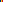
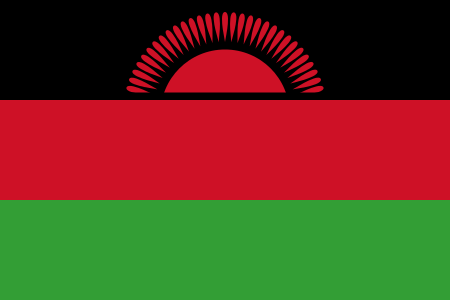
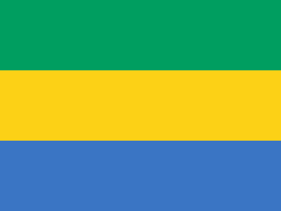
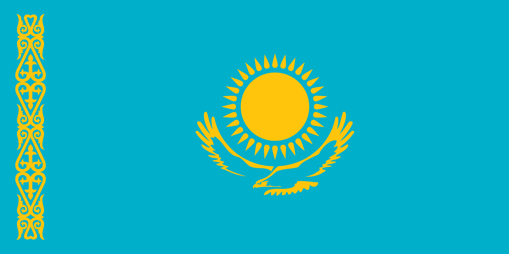
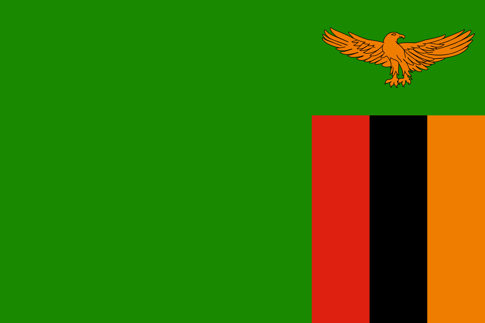
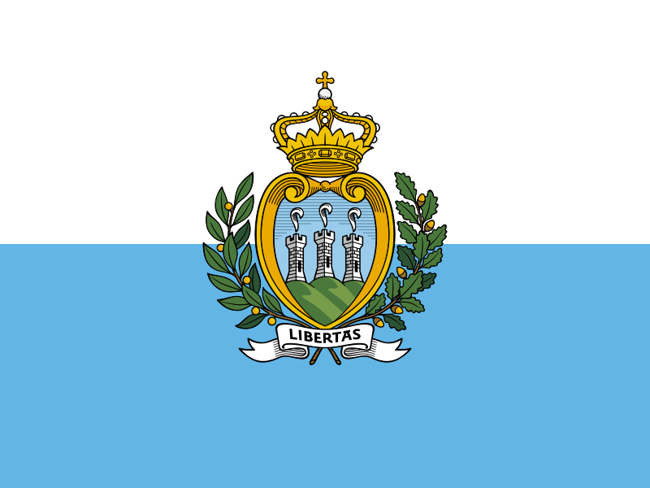
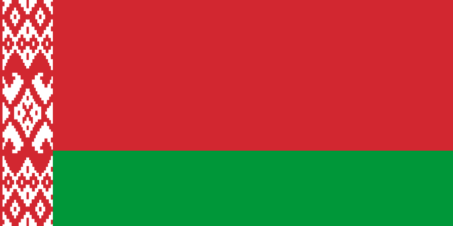

Question 161Completed result

Country (revealed after completion)
Romania
Currency🟩 Independent
Your answer: LeuCurrent currency: Romanian Leu (RON)
Attempts: Leu
Correct initial independent answer.
Edition 1 · Q161–Q170 · all 10 graded
| Score | Currencies |
|---|---|
| Pure | 7/10 |
| Pure + Assisted | 7/10 |
| Independent | 7 |
| Assisted | 0 |
| Wrong | 3 |
| Cancelled | 0 |
| Score | Currencies |
|---|---|
| Pure | 120/169 |
| Pure + Assisted | 125/169 |
| Independent | 120 |
| Assisted | 10 |
| Wrong | 39 |
| Cancelled | 1 |
Original flags, submitted attempts and correct current currencies. Q162 and Q168 both use Kwacha; Q167 conceded after requested clue. Q57 remains previously cancelled for an unfair flag and excluded from the denominator.

Attempts: Leu
Correct initial independent answer.

Attempts: Franc → Pound → Shilling → don't know
Explicit don't know after unassisted retries; Wrong 0.
Attempts: Pound
Correct initial independent answer.
Attempts: Shilling
Correct initial independent answer.
Attempts: Euro
Correct initial independent answer.

Attempts: Franc
Correct initial independent answer.

Attempts: Som or manat → clue → don't know
Clue: Introduced in 1993, replacing Soviet ruble. Historical linguistic connections with Russian word for money. Five letters: TE___.
Explicit don't know after requested clue; Wrong 0.

Attempts: Franc → Pound → Shilling → don't know
Explicit don't know after unassisted retries; Wrong 0.

Attempts: Euro
Correct initial independent answer.

Attempts: Ruble
Correct initial independent answer.
| Q | Flag | Correct Country | First Answer | Final Answer | Correct Currency + ISO | Result |
|---|---|---|---|---|---|---|
| 161 | Romania | Leu | Leu | Romanian Leu (RON) | 🟩 Independent | |
| 162 | Malawi | Franc | don't know | Malawian Kwacha (MWK) | 🟥 Wrong | |
| 163 | Sudan | Pound | Pound | Sudanese Pound (SDG) | 🟩 Independent | |
| 164 | Somalia | Shilling | Shilling | Somali Shilling (SOS) | 🟩 Independent | |
| 165 | Greece | Euro | Euro | Euro (EUR) | 🟩 Independent | |
| 166 | Gabon | Franc | Franc | Central African CFA Franc (XAF) | 🟩 Independent | |
| 167 | Kazakhstan | Som or manat | don't know | Kazakhstani Tenge (KZT) | 🟥 Wrong | |
| 168 | Zambia | Franc | don't know | Zambian Kwacha (ZMW) | 🟥 Wrong | |
| 169 | San Marino | Euro | Euro | Euro (EUR) | 🟩 Independent | |
| 170 | Belarus | Ruble | Ruble | Belarusian Ruble (BYN) | 🟩 Independent |
170 / 195 countries encountered · 169 graded currency answers · 1 earlier cancelled · 25 remaining